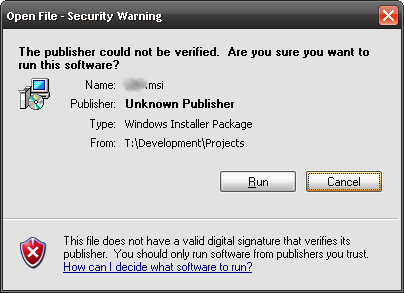
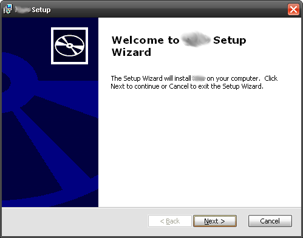
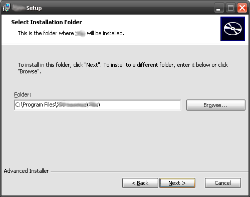
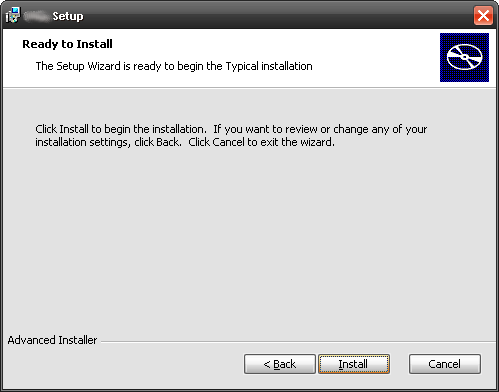
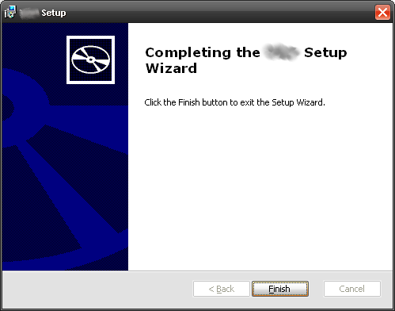
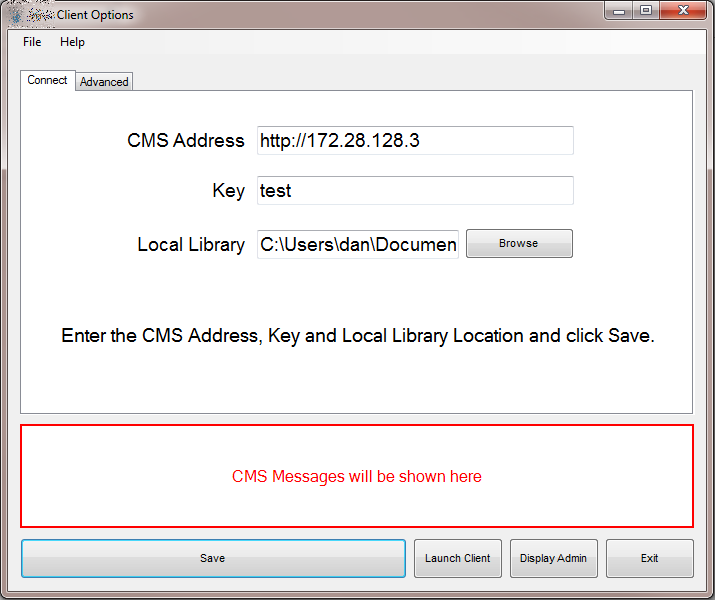

Windows Client Installation
The Xibo windows client is distributed as a windows installer file (MSI) which is a standard "double click" installation.
There are 3 steps to follow:
- Preparation - Minimum Requirements and MSI
- Installation - Double click the MSI to start the installation process.
- Connect - Connect your client to the CMS
Minimum Requirements
Xibo is a low resource signage solution, however with the advance of technology it has been necessary to set out some minimum requirements. The installation process will check these for you, but they are listed below for convenience:
- A network connection to the CMS (possibly over the Internet)
- Microsoft Windows 7 or later
- .NET Framework v4.5
- Internet Explorer 8+ (recommended IE11 or higher)
- Flash Player Version 9 or later (if Flash support required)
- Windows Media Player 11 or later
- For PowerPoint support, Microsoft PowerPoint 2003 or later. PowerPoint viewer is not suitable.
Installation
To start the installation double click on the Xibo msi file you downloaded along with the package. The installer will take you through a number of screens asking for your confirmation at each stage. The steps are outlined below.
Step 1
You may see the following security warning when installing Xibo. Please click on "Run" to begin the installation.

Step 2
The installer presents a welcome screen. Please press "Next".

Step 3
Choose the location where Xibo should be installed. The default location should normally be sufficient, however to change the location click browse. After making the selection (or if leaving to the default) click "Next" to continue.

Step 4
A confirmation message is then shown. When happy with the selections made click "Install" to begin. Otherwise click "Back" to correct any errors.

Step 5
The Installation is complete. Click finish to exit.

Connect to the CMS
Newly installed clients must be configured and registered with the Xibo CMS before they can be used. The Xibo Configuration Options are accessible on each client installation from the Start Menu, All programs.
Select "Xibo Client Options" to register this display on the Xibo Network; or to make changes to this display configuration.
Client Options Screen
Most of the client options are set on the CMS and delivered over the network to the client. This keeps the client configuration to a minimum on each new installation.
Before the options can be sent from the CMS it is necessary to register the display with the CMS. This can be done from the client options screen, pictured below.

There are a few other settings that can only be set on the client side. These are explained below.
Settings
CMS Address
This is the fully qualified address of your CMS installation. For example http://your.domain/cms/.
Key The secret CMS Key that will authenticate this display with the CMS.
Local Library The location for the display client to store its local files. Files are downloaded from the CMS so that the client will still function if it looses connection with the CMS.
Display ID The unique ID for this display. An automatically generated unique ID will be assigned at installation but can be modified if appropriate.
Splash Screen Optionally override the splash screen with an image stored locally on the client PC.
Proxy settings
The display client needs to have access to the CMS during the registration process and also to get new content. If the client is behind a proxy server, then details of that server can be entered in the proxy section.
Username The user name used to authenticate with the Proxy Server.
Password The password used to authenticate with the Proxy Server.
Domain The domain used to authenticate with the Proxy Server.
The Save button and Status Messages
Once all of the settings have been filled in (minimum CMS Address, Key, Local Library and Display ID) the Save button should be pressed. At this point the message window will update with the status "Saving with CMS... Please Wait...."
Assuming there are no errors with the communication between the CMS Address and the client, the display will be registered and awaiting approval.
CMS Display Management
Now log in to the server web interface, go to the "Display->Displays" page. You should see your newly registered client in the list. Click the "Edit" button next to the display. The "License Display" option will automatically change to "Yes". Optionally select a different default layout (the layout the client will play if nothing is scheduled).
Display Setting Profiles
Once registered the display client will be given a default display setting profile. For more information see the display profiles section.
Make sure you click Click "Save" before exiting the Client Options.
Start Client Player
You can now start the Xibo Client Player. It should show you the Xibo splash screen while the default layout and its media contents (and anything else you have scheduled) are downloaded and then begin playing layout contents.
Windows Modifications
Here are some suggested settings for Windows / PowerPoint for a Display Client:
- Turn off all screen savers
- Turn off screen power saving
- Load the "No Sounds" Sound Scheme (Control Panel -> Sounds and Audio Devices Properties)
- Set a plain wallpaper (Hopefully nobody will see it, but you might need to reboot the client, or restart Xibo and a sane wallpaper is a help)
- If the client is accessible from where you manage your displays from, you might want to install UltraVNC server so you can connect in and check on the client from time to time. Use the "View only" option in the VNC client to avoid disturbing the display.
- Set Windows to log on as your display client user automatically
- Disable balloon tips in the notification area
HTML5
[[PROUCTNAME]] uses the Web Browser provided by Windows to display web content, tickers, text, etc. This browser component defaults to Internet Explorer 9 on most systems.
In version 1.7.8 onwards the installer creates a registry key to force the browser to be IE11.
Users running 1.7.7 or earlier should follow these instructions for enabling IE11 support.
PowerPoint
Displays that will show PowerPoint should follow the detailed preparation instructions to confirm that the registry has been modified correctly for their version of Windows / PowerPoint.
Thumbnail Database
Windows automatically creates thumbnails for content in the user folder and will try to do so for the Xibo local library.
In some cases this interferes with the normal operation of the player and should be disabled. This can be achieved with the following registry settings.
[HKEY_LOCAL_MACHINE\SOFTWARE\Microsoft\Windows\CurrentVersion\Policies\Explorer]
"NoThumbnailCache"=dword:00000001
"DisableThumbnailCache"=dword:00000001
[HKEY_LOCAL_MACHINE\SOFTWARE\Microsoft\Windows\CurrentVersion\Explorer\Advanced]
"DisableThumbnailCache"=dword:00000001
"NoThumbnailCache"=dword:00000001Please ensure you know what you are doing and have appropriate backups in place before modifying the registry
Multiple Clients
It is possible to run more than one of the Display client on Windows. Installation Instructions
Screen Saver
It is possible to run Xibo as a Screen Saver. Installation Instructions.
Watchdog
The Watchdog is a system tray application which can be used to monitor the stability of the main application and restart it where necessary.
In 1.7.8 the watchdog is configured and started by the Player application. Prior to that it must be manually configured following the Installation Instructions.